01
MICROHYDRODYNAMICS
Sperm motility from microscopy to simulation
Inferring flagellar kinematics from experimental centrelines and resolving the surrounding Stokes flow with force-coupling methods.κ0(s,t) → rod mechanics → u(x,t)

PhD Scholar · IIT Madras · CoPhe Lab
Physics-based and computational models of human physiological systems—from flagellar flows to long-duration spaceflight health.
02 — SELECTED RESEARCH
MICROHYDRODYNAMICS
SPACE PHYSIOLOGY
DYNAMICAL SYSTEMS
METABOLIC PHYSIOLOGY
FLOW INSTABILITY
03 — POSITION
My work sits between mechanical engineering and physiology. The common thread is not one organ or disease, but a way of asking questions: what is the simplest physically defensible model that exposes the mechanism?
The long-term aim is mathematical space physiology: engineering tools that explain, predict and eventually help manage human adaptation during long-duration missions.
04 — ACADEMIC JOURNEY
A path shaped by curiosity, competitive preparation and a deliberate movement toward mechanism-led research.
NAGPUR · MAHARASHTRA
JAMMU · JAMMU & KASHMIR
CHENNAI · TAMIL NADU
05 — GALLERY & MILESTONES
Selected moments of scientific exchange, academic development and recognition.
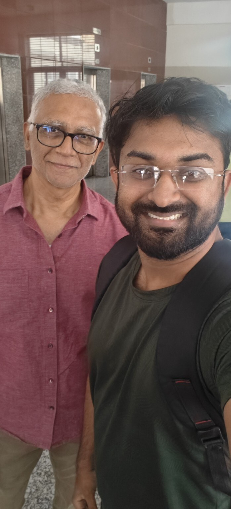
CERTIFICATION COURSE · JULY 2026
The Mathematical Intuitions Behind Modern Artificial Intelligence
Completed the short-term certification course organized by the Wadhwani School of Data Science and AI, IIT Madras, from 15 to 25 July 2026.
The course was conducted by Anil Ananthaswamy, Professor of Practice at WSAI and an award-winning science writer and author.
View course certificateGIAN COURSE · ACADEMIC EXCHANGE
“When we listen to visionary professors, we also try to follow that thought process and get inspired to do the same.”
A reflection following a GIAN course led by Prof. Suman Chakraborty. The programme illustrates how the Global Initiative of Academic Networks connects students with leading researchers and new ways of thinking.
View the original LinkedIn post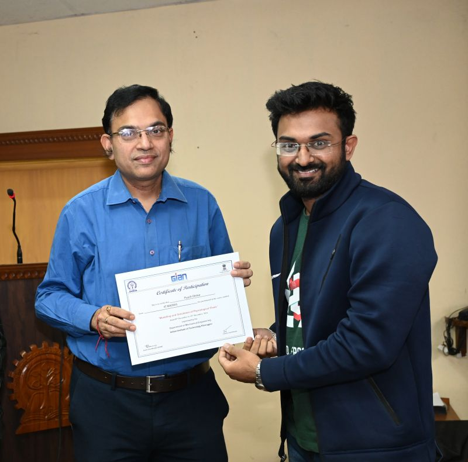
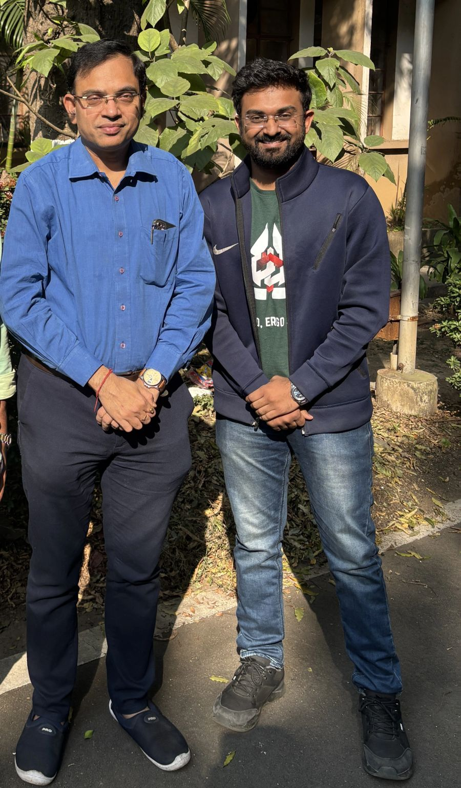
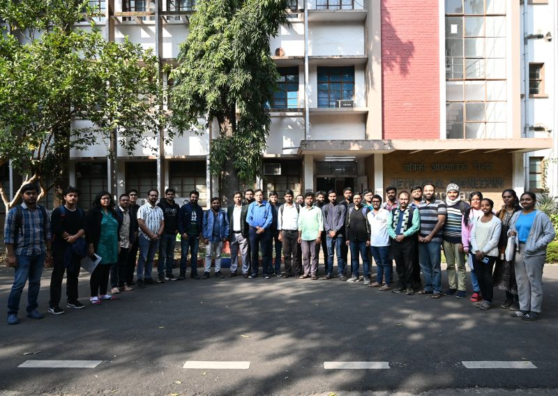
PUBLICATION RECOGNITION · 14 JANUARY 2022
Effect of sensible heat storage materials on the thermal performance of solar air heaters: State-of-the-art review
IIT Jammu’s Department of Mechanical Engineering featured this work in its Torchbearers 2022 series. The review was published in Renewable and Sustainable Energy Reviews, Volume 157, article 112085.
View the original Facebook post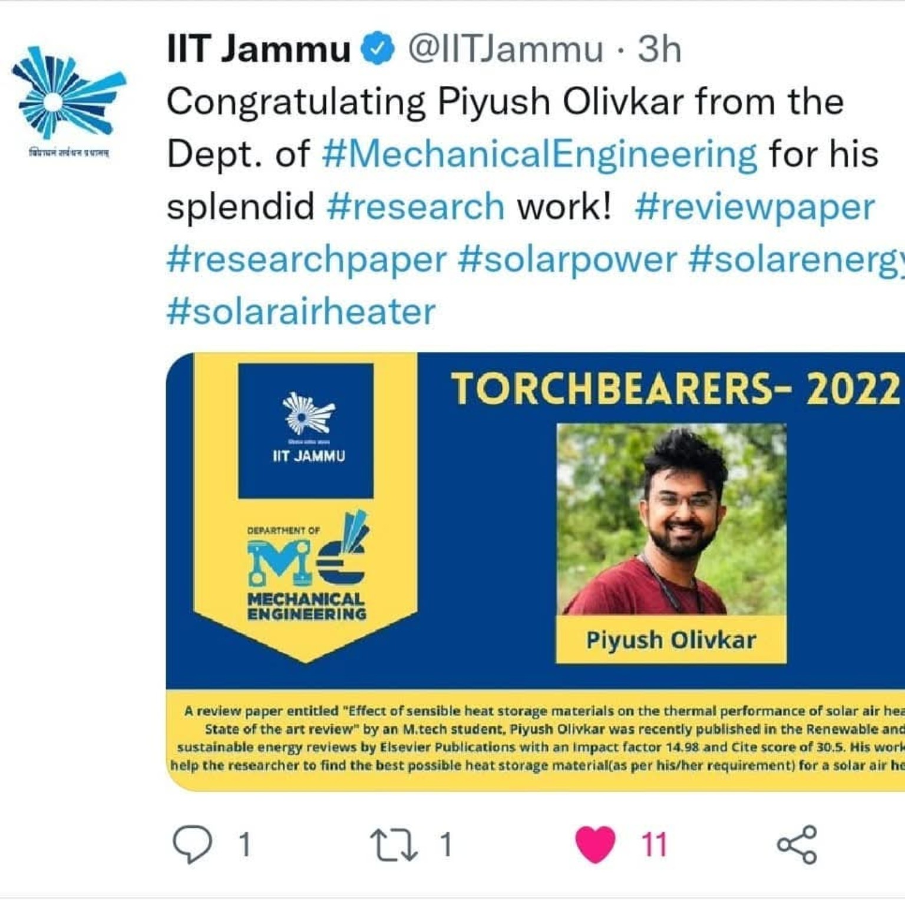
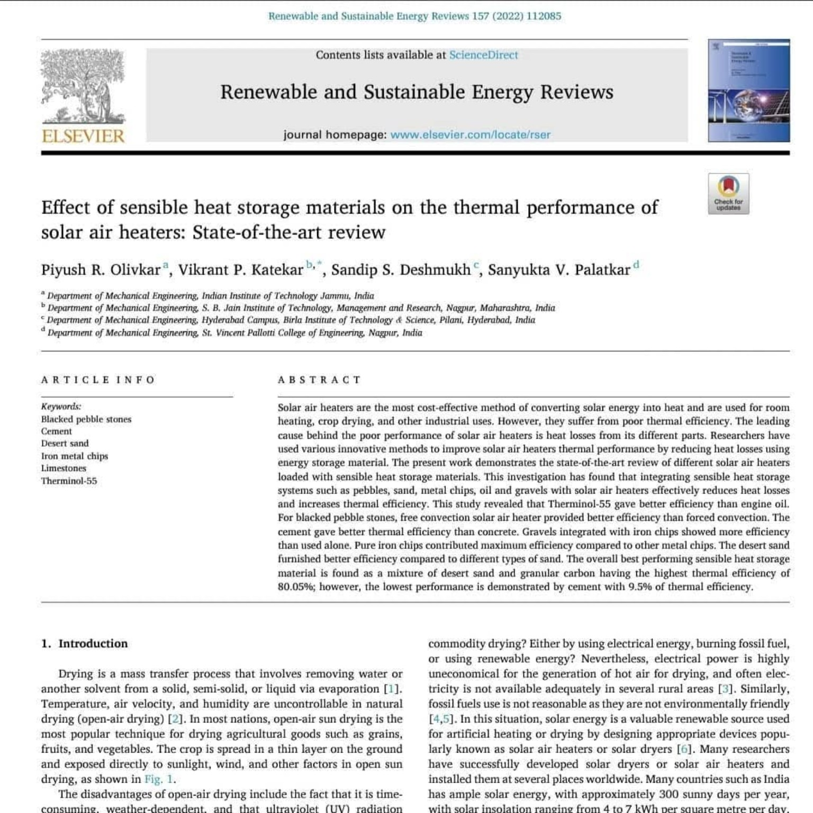
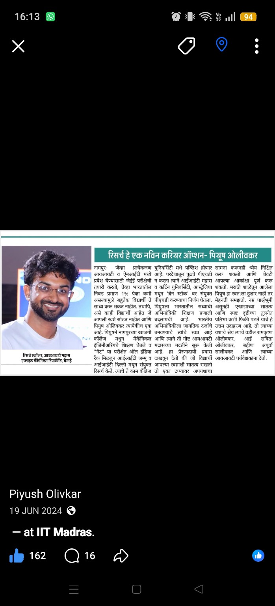
MEDIA PROFILE · 19 JUNE 2024
A Marathi-language newspaper profile presenting research as a serious career pathway. The feature reflects on the progression from engineering education to IIT research and encourages students to see curiosity, sustained preparation and research training as a viable professional direction.
View the original Facebook post06 — TALKS & OUTREACH
My outreach goal is to improve engineering awareness among students, beginning with colleges across Maharashtra and gradually extending to institutions throughout India.
01 — THE INITIATIVE
ENGINEERING BEYOND EXAMINATIONS · FREE · ONE-HOUR · INTERACTIVE
Lessons I Wish I Knew When I Started Engineering
A direct conversation about developing as an engineer: building fundamentals, connecting mathematics and theory with real problems, navigating setbacks, and making informed decisions about technical careers, higher education and research.
I want engineering students—particularly those studying in regional and non-elite institutions—to see engineering as a way of understanding and solving real problems, not merely as a degree or a sequence of examinations.
Designed for students from Mechanical, Civil, Chemical, Electrical, Electronics and other core engineering disciplines.
Invite Piyush for a SessionQUESTIONS EXPLORED
02 — THE PROGRAMME
Start locally. Build a repeatable research-awareness programme. Expand nationally.
Meet students in their own academic environment.
Explain how questions become publishable research.
Discuss higher studies, GATE, PhD routes and research careers.
Answer students’ questions honestly and directly.
Connect engineering colleges across Maharashtra and India.
03 — DOCUMENTED TALKS & OUTREACH
College outreach, interdisciplinary research talks and faculty-development sessions—each documented with its institution, theme and supporting visual.
IIT JAMMU · JAMMU
Delivered through R4M—Research for Minds, IIT Jammu’s weekly interdisciplinary research forum. The session introduced Reynolds-number reasoning, linear stability analysis and criteria for predicting the onset of fluid-flow instabilities to research students and faculty.
View original LinkedIn post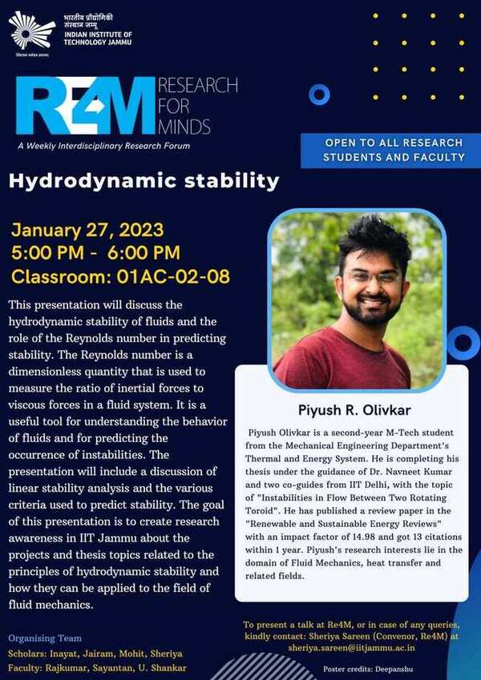
KHANDALA · MAHARASHTRA
Guiding students through research opportunities and the value of higher education, with the broader goal of encouraging contributions to India’s scientific progress.
View original LinkedIn post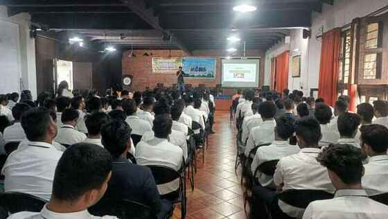
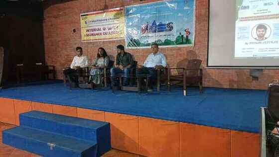
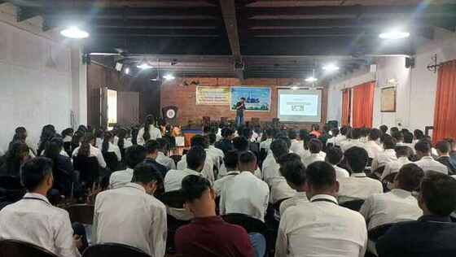
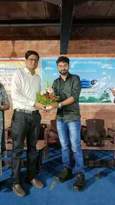
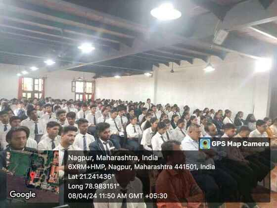
LONARA, NAGPUR · MAHARASHTRA
Engineering Excellence—a holistic discussion on research, higher education, GATE, PhD pathways and long-term career development.
View original LinkedIn post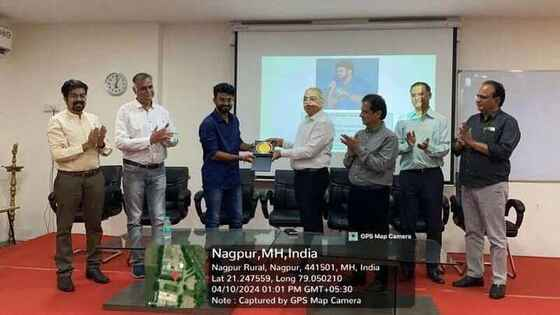
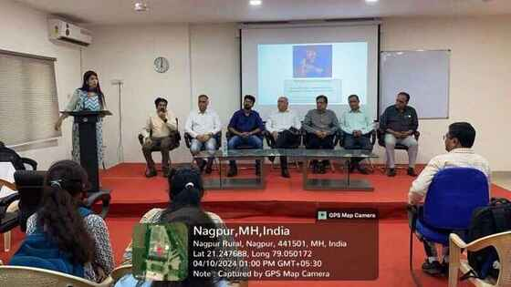
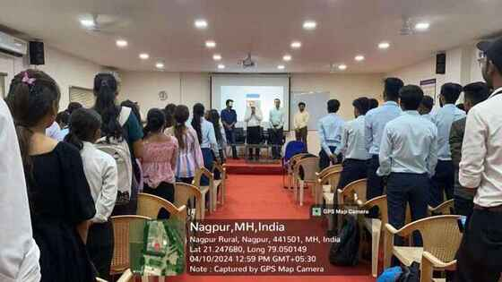
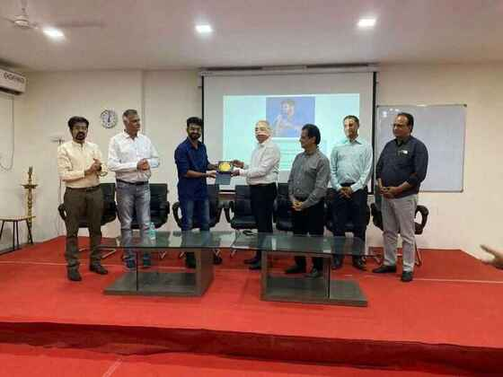
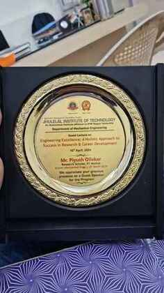
NAGPUR · MAHARASHTRA
A two-campus visit focused on transferring lessons gained at IITs to students and faculty, and motivating more young engineers to participate in India’s scientific development.
View original LinkedIn post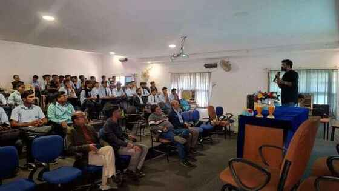
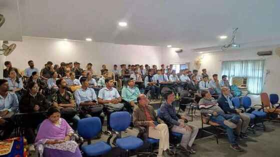
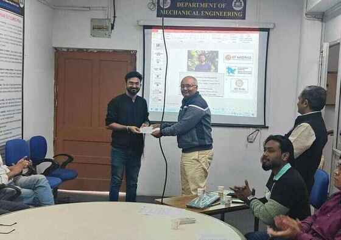
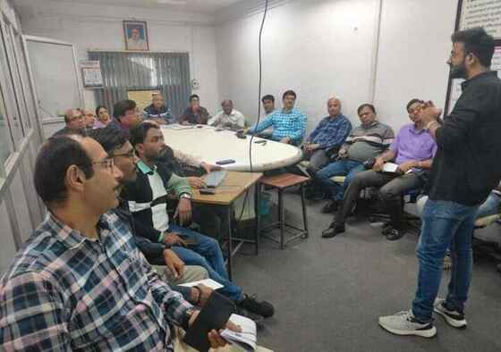
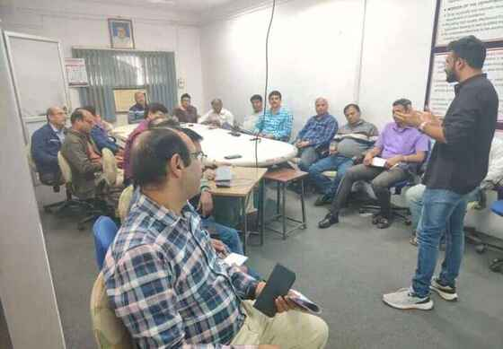
MITS KOCHI · ONLINE FACULTY DEVELOPMENT PROGRAMME
Extracting and Modeling Sperm Kinematics in Computational Models
Invited Session 1 speaker on Day 5 of the five-day FDP Medical Imaging to Biomaterial Design: Modelling and Simulation for Personalized Healthcare, organized by Muthoot Institute of Technology and Science, Kochi and its Institution’s Innovation Council.
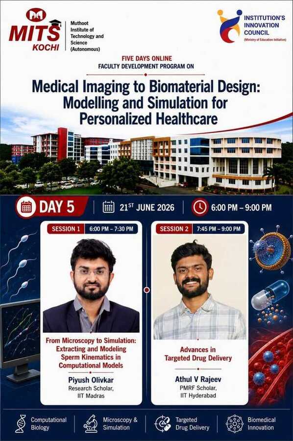
FULL SESSION RECORDING
07 — LONG HORIZON
Building toward an independent research programme in engineering-driven physiology and space medicine.